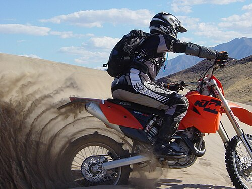

off-road
Off-road motorcycles, also known as dirt bikes or scramblers, are specially designed for off-road use. The term off-road refers to driving surfaces that are not conventionally paved. These are rough surfaces, often created naturally, such as sand, gravel, a river, mud or snow. These types of terrain can sometimes only be travelled on with vehicles designed for off-road driving (such as SUVs, ATVs, snowmobiles and mountain bikes in recent decades, and minibikes even earlier) or vehicles are designed to better handle off-road conditions. Compared to road-going motorcycles, off-road machines are lighter and more flexible, typically having long suspension travel, high ground clearance, and are geared higher to provide more torque in off-road situations.[34] Wheels (usually 21" front, 18" rear)[citation needed] have knobby tires, often clamped to the rim with a rim lock.[6][35] [36] Many competitive events have emerged[when?] and developed into a variety of off-road motorcycle sports, for which a number of specialized motorcycles have been built:
